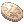

Mora Village
| Requirements | |
|---|---|
| Base Level: | 99 |
| Starting Point: | bif_fild01 158/340 |
| Items: | None |
| Rewards | |
| Experience: | None |
| Items: | None |
| Others: | Ability to do Mora Daily Quests |
Mora Village is a town in the New World. Located near the Bifrost Bridge, people can talk to each other without the need to use the Ring of Ancient Wise King.
The town is known for the exclusive equipment and enchantments that it offers in exchange for  Mora Coins. To get started in Mora, follow the instructions below.
Getting Started

The Quest NPCs in Mora will refuse to talk to you at first. You need to gain their trust by completing a short pre-requisite that involves going through the Hazy Forest instance. This quest is called the Wandering Guardian quest and requires you to be at least level 99. No other requirements are needed.
If this is your first time going through the instance, it is recommended to be in a party, as most of the monsters here are suited for level 140+ characters. Additionally, it is best to keep the map of the instance handy, as it is easy to get lost in the repeating patterns of the maze.
When you're ready, use the Warper NPC to warp to Instances > Hazy Forest. The party leader must then speak to the Laphine Soldier standing slightly Northwest of your location and tell him that you are ready to go through the forest.
This will create the instance for your party, allowing you to enter. You will have 2 hours to complete before your party gets warped out. To enter the instance you need to walk up the log and talk to the shadow.
Wandering Guardian Quest
Part 1: The Hazy Forest

Before doing anything, make sure you have the map open. The map can be found here.
Once inside, before doing anything else, talk to the Mysterious Young Man. All party members wishing to complete the Wandering Guardian Quest must talk to him. Once you've done this, you're ready to venture into the Hazy Forest.
The Hazy Forest is sort of a maze of portals and little islands. Most of the portals are accessible from the start, except for a few, which are guardian portals. These guardian portals block the way to the next areas, and they all have names such as Tomba's Garden Tree.
To unlock these portals you need to kill the guardian monster with the same name, in this case; Tomba. The guardian can often easily be found either on the island where the garden tree is, or a few island away within the same area. You can consult the map to find their exact locations, if you have trouble finding them.
Once the guardian monster is defeated, talk to the Garden Tree and select Chop Down the Tree to open the portal to the next area.
Part 2: The Lost Dragon
While venturing through the Hazy Forest, you will be able to find the Lost Dragon in one of the islands. You must kill the Lost Dragon to proceed with the quest.
The Lost Dragon will spawn randomly in one of the yellow-marked islands in the map. If you still haven't found it when you reach Island 56, keep going until you find him. You can then return to island 29 through the portal at island 65 in Pumba's area. Don't forget to make sure you've checked Spyder's and Neoron's enclosed area, accessible from island 47 in Namon's area.
When you find the Lost Dragon, try your best to kill it off quickly. Holy element attacks are best against it, so having a Priest with Aspersio will be helpful. Watch out for when it casts something very slowly, as it's most likely it's trying to cast Earthquake. Try your best to kill it before it finishes casting it. Aside from that, it also casts dispel occasionally, so be careful of that if your party is using a Sura to tank it.
| Image | Name | Level | Race | Element | HP |
|---|---|---|---|---|---|

|
Lost Dragon
|
135 | Dragon | Dark 3 | 608,920 |

Part 3: The Yggdrasil Guardian
When you have defeated the dragon, keep going ahead until you reach island 56. 2 NPCs will appear: the Mysterious Young Man, who you find out is Loki and the girl he was looking for.
Talk to Loki until he says he will meet you back in the village. When you've done this you are done in the Hazy Forest for now. You can leave by relogging.
Part 4: Reuniting
Once you're in Mora (@go 31) talk to the Flower Smelling Lady and then to Sharp Eyed Man in the inn. (The girl and Loki you met in the Forest.) Talk to them until you get a Loki's Muffler and a Pendant of Guardian.
This concludes the Wandering Guardian quest. You now have access to Mora Daily Quests and can start collecting Mora Coins.
Lope's Clues
| Requirements | |
|---|---|
| Base Level: | 100 |
| Starting Point: | mora 117/66 |
| Items: | 30 Lope's Clue |
| Rewards | |
| Experience: | 10,000,000 (Base) / 20,000,000 (Job) |
| Items: | 10 Mora Coins |
| Others: | None |
This is a very short non-repeatable quest that will give you 10 easy Mora Coins to start off with.
After you've completed The Wandering Guardian quest and become level 100 you can start this quest.


- In Mora, talk to Euridi.
/navi mora 117/66 - Tell her you didn't see Lope and offer her your help.
- Warp back to Mora using @go 31 and talk to Pitt at the inn.
/navi mora 64/144 - Go back to Euridi and talk to her again. She will tell you to gather 30 Lope's Clues. These items are dropped by Parus inside Hazy Forest, and are non-tradable.
- Talk to Pitt again at the Mora inn.
- He will ask you to give him the clue's, but do not give him any!
- After you've talked to Pitt, go back to Euridi and talk to her.
- Then go back and talk to Pitt who will give you a Lope's Ring.
- Go back to Euridi once again, talk to her, then talk to Euridi's Friend, who is standing right next to her.
- After this you will need to go to Bifrost Field 1 (Use the Instances > Hazy Forest warp to get there quickly) and find Lope.
/navi bif_fild01 131/338 - Walk to the square next to him, triggering a conversation. Choose Talk to him.
- After this go back to Euridi once more and tell her Lope is dead.
- Talk to Euridi's friend and she will give you 10 Mora Coins and some pretty decent EXP.
See Also
- Mora Daily Quests
- Mora Equipment
- Equipment Guide
- Be aware that NovaRO's implementation of equipment and enchants differs from iRO before visiting the below links.
- Mora Enchants on iROwiki
- Mora Equipment on iROwiki